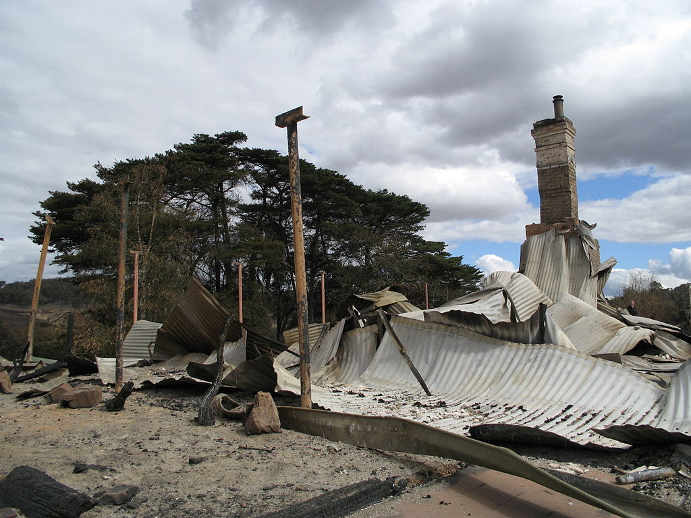
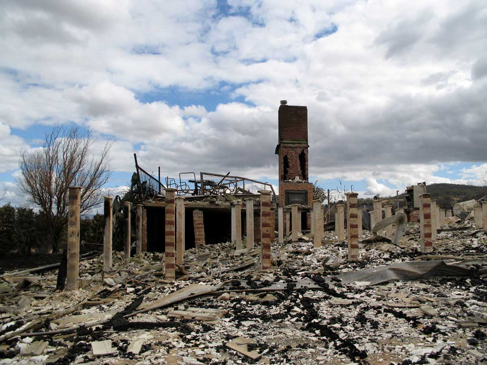
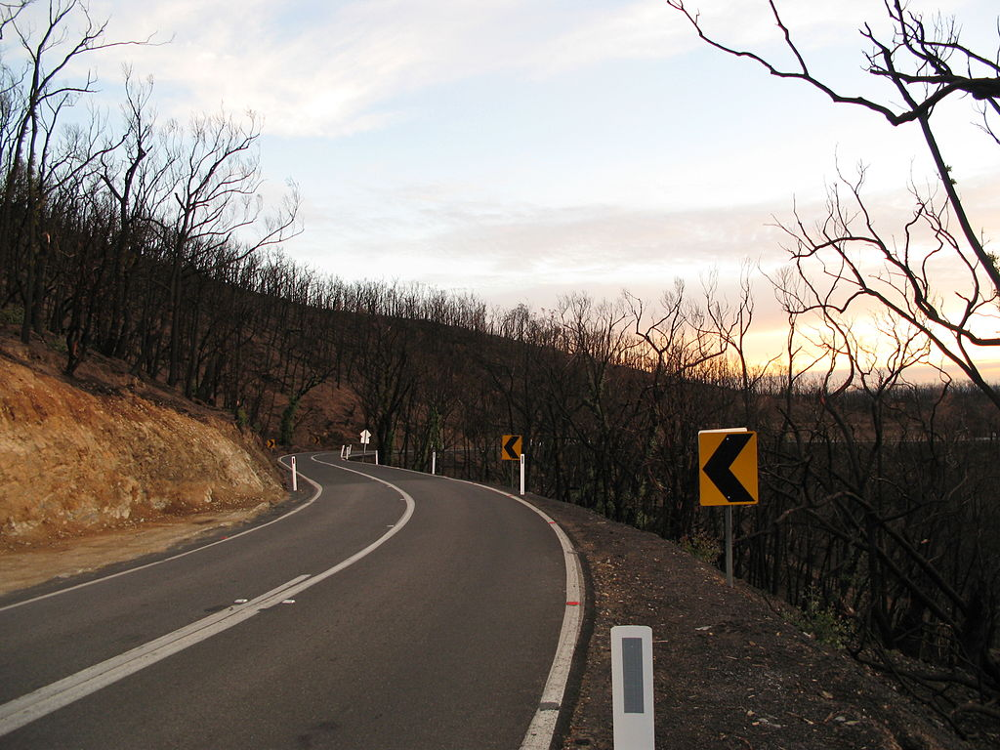
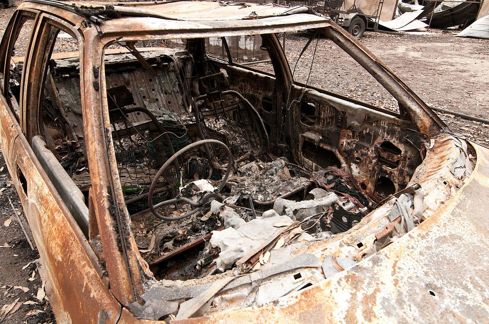

Consequences and Aftermath
"The emotional scars from Black Saturday continued to resonate; many affected families refused to rebuild their homes, saying that the risk of another fire was too great. The tragedy reminded Australians that the notion of living in the bush might still hold romantic appeal for many city dwellers, but it carried with it the very real and deadly threat of bushfire."
The Black Saturday bushfires killed 173 people, 120 in the Kinglake area alone. Another 414 people were injured. More than 450,000 hectares had burned and 3500 buildings including more than 2000 houses destroyed. The RSPCA estimated that up to one million wild and domesticated animals died in the disaster.
The impact of the bushfires was so overwhelming that Premier Brumby announced a royal commission into the fires on 13 February 2009, even before the full extent of the disaster was known.
In September/October 2009, it was announced that a new fire hazard system would replace the previous one. The new system involves a six-tier scale to indicating such things as the level of risk and activity of the fire. This standardised Fire Danger Rating (FDR) was subsequently adopted by all Australian states in late 2009.
The Bushfires Royal Commission gave a "conservative" estimate of the total cost of the Black Saturday bushfires of A$4.4 billion. This figure included a value of $645 million placed on the 173 lives lost using an accepted method the government uses to value lives, however did not include any assessment of the cost of the injuries received.
Victoria Police investigated the cause of the fires and charged one man with arson in connection with the Churchill fires near Morwell. They also charged two youths with arson in connection with the Bendigo blaze. However, Supreme Court Justice Paul Coghlan found the two youths were unfit to stand trial because of their intellectual disabilities.
The lasting damage of the Black Saturday bushfires has been the personal cost to individuals, families and communities. Loss of life and injury to family and friends, loss of homes and the memories they contained, the complete alteration of familiar landscapes and the sense of foreboding that such a disaster could happen again have affected people across the fire-ravaged region. Doctors and psychologists have reported a rise in suicides among bushfire survivors, along with alcohol and drug abuse and addictive behaviour such as gambling.

Bushfire damage to property in Steels Creek
Photo: Nick carson

Bushfire damage to a property north of Yarra Glen
Photo: Nick Carson
Wikimedia

The St. Andrews-Kinglake Road, one of the few roads out of the fire area, two months after the bushfires
Photo: Nick Carson

A burnt out car at Kinglake after the Black Saturday bushfires
CSIRO
❮
❯

{kind=link}
{kind=link}
{kind=link}
{kind=link}